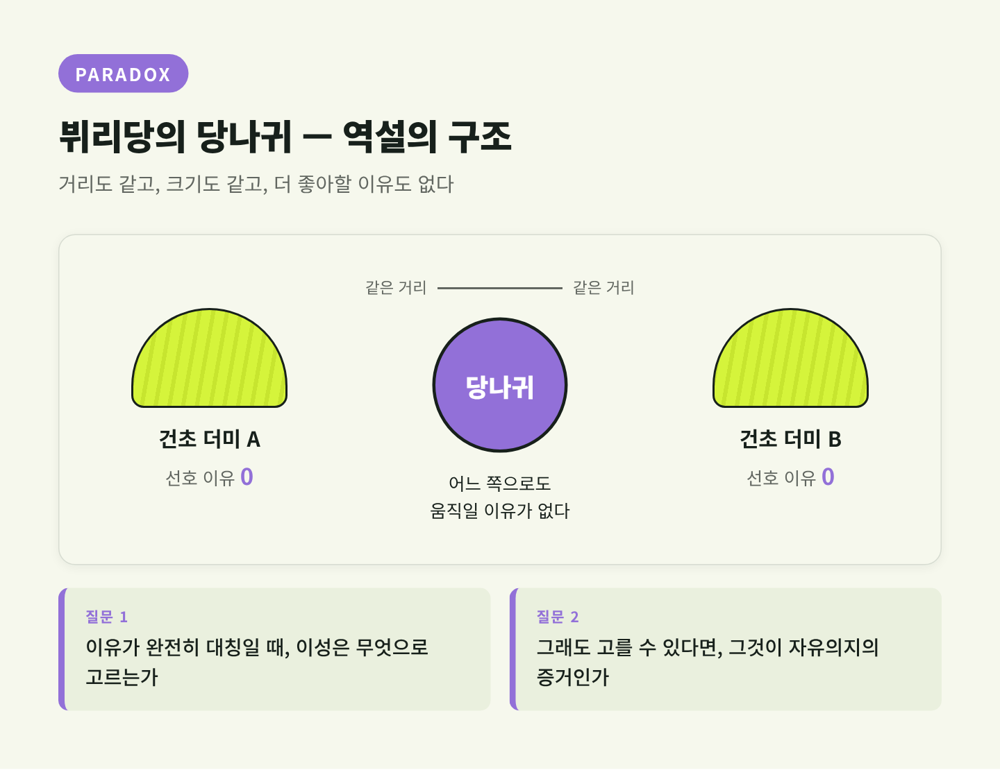
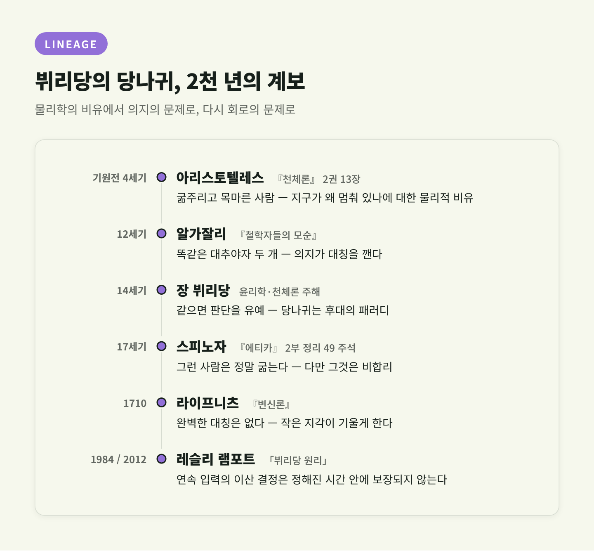
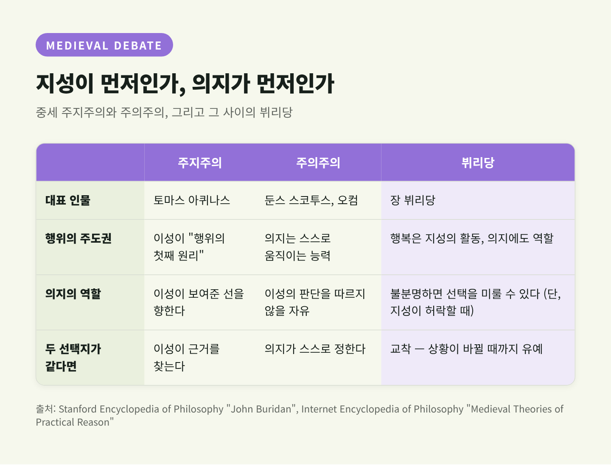
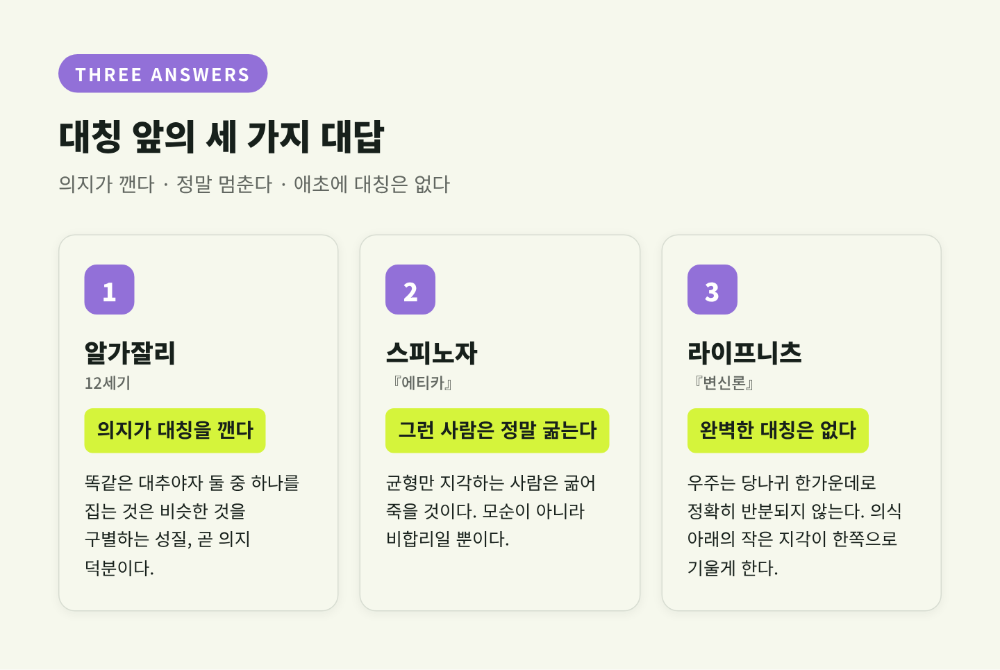
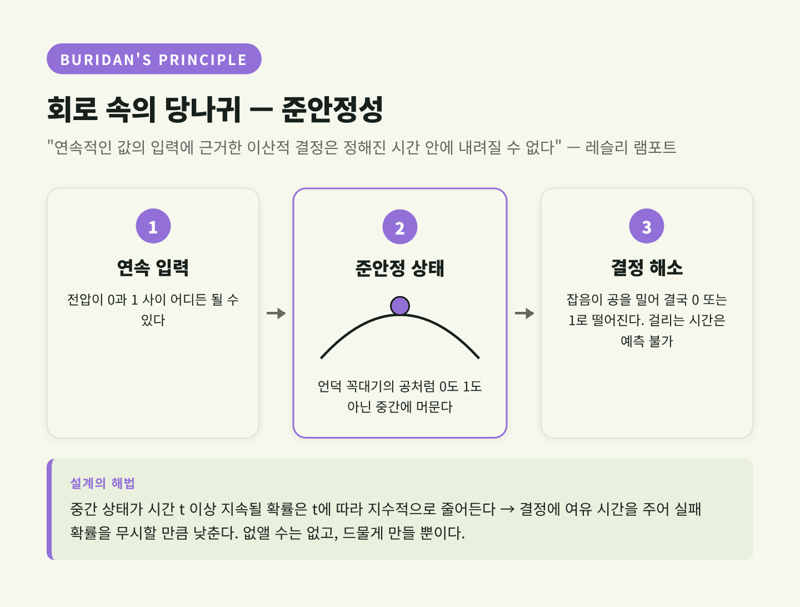
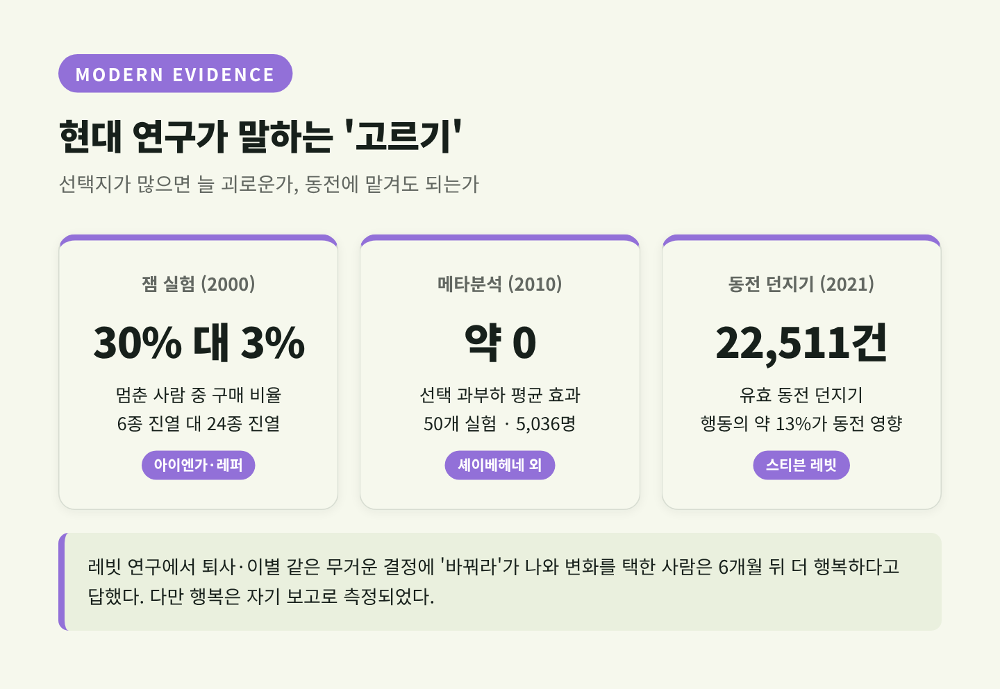

뷔리당의 당나귀 역설 — 똑같은 두 선택지 앞에서 이성은 무엇으로 고를까
이번 글에서는 '뷔리당의 당나귀'라는 오래된 사고실험을 정리해 보겠습니다. 똑같이 좋은 두 선택지 앞에서 이성은 무엇으로 고르는지, 철학자와 공학자가 각각 어떤 답을 내놓았는지 따라가 봅니다.
먼저 요점부터 적어 둡니다.
- 이 역설의 이름은 중세 철학자 장 뷔리당에게서 왔지만, 정작 그의 저작에는 당나귀가 나오지 않습니다.
- 철학의 답은 크게 셋입니다. 의지가 대칭을 깬다(알가잘리), 그런 사람은 정말 굶는다(스피노자), 완벽한 대칭은 애초에 없다(라이프니츠).
- 20세기에는 컴퓨터 과학자 레슬리 램포트가 이 역설을 회로의 '준안정성' 문제로 되살렸습니다. 그리고 현대 연구는 동전 던지기가 생각보다 합리적일 수 있다고 말합니다.
■ 두 건초 더미 사이의 당나귀
배고픈 당나귀 한 마리가 있습니다. 양옆으로 똑같은 거리에 똑같은 건초 더미가 놓여 있습니다. 어느 쪽을 더 좋아할 이유가 하나도 없습니다.
이유 없이는 움직이지 않는 존재라면, 이 당나귀는 어느 쪽으로도 가지 못합니다. 그리고 결국 굶어 죽는다는 것이 이 사고실험의 결론입니다.
우스운 이야기처럼 들리지만 질문은 진지합니다. 선택할 이유가 완전히 대칭일 때, 이성적인 행위자는 무엇으로 고르는가. 그 순간에도 고를 수 있다면, 그것이 자유의지의 증거인가.
영국 철학자 마이클 하우스켈러는 바로 이 장면을 자유의지의 '시험 사례'라고 부릅니다. 한쪽 이유가 더 무거울 때는 고르는 것과 끌려가는 것이 겉으로 구별되지 않기 때문입니다. 완벽한 균형에서의 결정만이 의지가 정말 자유로운지 드러낸다는 뜻입니다.

■ 이름의 주인은 정작 당나귀를 쓰지 않았다
장 뷔리당은 1300년 무렵 프랑스 피카르디 지방에서 태어났습니다. 파리 대학에서 가르쳤고, 1328년과 1340년 두 차례 총장을 지냈습니다. 출생 연도는 자료마다 조금 다릅니다. 스탠퍼드 철학백과와 브리태니커는 1300년경, 다른 백과는 1295년경으로 적습니다.
흥미로운 점은 따로 있습니다. 스탠퍼드 철학백과는 이 당나귀 예가 "뷔리당의 저작 어디에도 없다"고 분명히 적습니다. 가장 그럴듯한 설명은 후대 비판자들이 그의 자유선택 이론을 비꼬려고 만든 패러디라는 것입니다.
브리태니커는 한 가지를 더 전합니다. 뷔리당의 『천체론』 주해에 실제로 나오는 동물은 당나귀가 아니라 개이며, 똑같은 두 몫의 먹이 앞에서 개가 어떻게 고르는지를 묻는다는 것입니다. 다만 이 대목은 브리태니커에서만 확인했기에, 참고 정도로 받아들이시길 권합니다.
■ 아리스토텔레스의 굶는 사람, 알가잘리의 대추야자
이야기의 뿌리는 훨씬 깊습니다.
아리스토텔레스는 『천체론』 2권 13장(295b)에서 비슷한 장면을 꺼냅니다. 몹시 배고프고 목마른 사람이 음식과 물로부터 똑같은 거리에 있으면 그 자리에 머물러야 하느냐는 것입니다. 다만 이것은 인간의 의지를 논한 대목이 아닙니다. 지구가 모든 방향과 같은 관계에 있어서 움직이지 않는다는 아낙시만드로스의 설명을 조롱하려는 비유였습니다. 그리스에서 이 장면은 물리적 힘의 균형에 관한 이야기였던 셈입니다.
이 장면을 인간의 선택 문제로 옮긴 사람은 12세기 이슬람 사상가 알가잘리입니다. 그는 『철학자들의 모순』 첫 번째 논의에서 이렇게 가정합니다. 대추야자를 좋아하는 사람 앞에 똑같은 대추야자 두 개가 있고, 그는 둘을 한꺼번에 집을 수 없다고.
그래도 그는 하나를 집습니다. 알가잘리는 그 이유를 "비슷한 것들을 구별하는 것을 본성으로 하는" 성질, 곧 의지에서 찾았습니다. 의지는 대칭을 깨는 능력이라는 주장입니다.
여기에는 신학적 목적이 있었습니다. 신의 의지는 신의 본성에 묶이지 않고, 여러 가능한 대안 가운데 하나를 현실로 만드는 '특수화자'라는 것입니다. 세계가 왜 하필 그때 창조되었는지를 설명하려는 논리였습니다. 안달루시아의 철학자 이븐 루시드는 이 주장에 반대 입장으로 응답했습니다.

■ 지성이 먼저인가, 의지가 먼저인가
뷔리당이 왜 이 역설의 이름이 되었는지 이해하려면 중세의 큰 논쟁을 알아야 합니다. 지성과 의지 가운데 무엇이 행위를 이끄느냐는 물음입니다.
주지주의 쪽의 토마스 아퀴나스는 이성을 "인간 행위의 첫째 원리"로 봤습니다. 의지는 이성이 선하다고 보여준 것을 향해 갑니다.
주의주의 쪽은 다릅니다. 둔스 스코투스에게 의지는 스스로 움직이는 능력입니다. 이성이 선하다고 판단해도, 의지는 그 판단을 따를지 말지 자유롭습니다. 1277년 파리 주교가 219개 명제를 단죄한 뒤, 이처럼 의지의 독립성을 강조하는 흐름이 힘을 얻었습니다.
뷔리당은 그 사이 어딘가에 섰습니다. 행복은 결국 지성의 활동이라고 봤다는 점에서 주지주의 편입니다. 하지만 선택지의 선함이 불분명할 때, 의지가 선택을 '미룰' 수 있다고 했습니다.
문제는 그 미룸조차 지성의 허락이 필요하다는 점입니다. 의지는 "지성이 더 숙고하는 편이 좋다고 판단할 때"에만 판단을 유예할 수 있습니다. 그래서 두 길이 똑같다고 판단되면, 의지는 교착을 스스로 깨지 못하고 상황이 바뀌기를 기다려야 합니다.
비판자들의 눈에는 바로 이 대목이 우스꽝스러웠습니다. 자유가 '아무것도 하지 않음'에 있다는 말처럼 들렸기 때문입니다. 그렇게 해서 굶어 죽는 당나귀가 그의 이름을 달게 되었다는 것이 학계의 유력한 설명입니다.

■ 스피노자와 라이프니츠의 대답
근대 철학자들은 이 당나귀를 정면으로 마주했습니다.
스피노자는 『에티카』 2부 정리 49의 주석에서 이 반론을 직접 다룹니다. 자유의지가 없다면 동기가 똑같이 균형 잡혔을 때 뷔리당의 당나귀처럼 굶어 죽겠느냐는 반론입니다. 그의 대답은 의외로 담담합니다. 배고픔과 목마름, 같은 거리의 음식과 물 말고는 아무것도 지각하지 못하는 사람이라면 정말 굶어 죽을 것이라고 인정합니다. 그리고 그런 사람을 사람이라 불러야 할지 당나귀라 불러야 할지 모르겠다고 덧붙입니다. 결정론을 끝까지 밀되, 그런 상태는 모순이 아니라 비합리일 뿐이라고 본 것입니다.
라이프니츠는 다른 길을 택했습니다. 그의 충족이유율에 따르면, 충분한 이유 없이는 어떤 사실도 존재하지 않습니다. 그렇다면 완벽한 균형에서는 정말 아무것도 고를 수 없어야 합니다.
그래서 그는 균형 자체를 부정합니다. 『변신론』에서 그는 이 당나귀를 "우주 안에서 일어날 수 없는 허구"라고 부릅니다. 우주는 당나귀 한가운데를 지나는 평면으로 정확히 반으로 나뉠 수 없다는 것입니다. 우리가 의식하지 못하는 '작은 지각들'이 언제나 한쪽으로 기울게 만든다고 그는 설명합니다.
정리하면 이렇게 갈립니다. 알가잘리는 의지가 대칭을 깬다고 했고, 스피노자는 대칭이면 정말 멈춘다고 했으며, 라이프니츠는 대칭이 애초에 없다고 했습니다.

■ 램포트의 '뷔리당 원리'와 회로 속 당나귀
이 역설이 공학의 언어로 다시 태어난 것은 20세기의 일입니다.
컴퓨터 과학자 레슬리 램포트는 1984년 「뷔리당 원리」라는 글을 씁니다. 핵심 문장은 이렇습니다. 연속적인 범위의 값을 갖는 입력에 근거한 이산적 결정은, 정해진 시간 안에 내려질 수 없다.
논증의 가정은 하나뿐입니다. 나중 시점의 당나귀 위치가 처음 위치에 따라 연속적으로 달라진다는 것입니다. 그렇다면 어떤 전략을 쓰든, 정해진 시간 안에 결정하지 못하는 출발점이 반드시 존재합니다. 램포트는 무작위성도 불확정성 원리도 이 문제를 없애지 못한다고 봤습니다.
그가 든 예는 무인 철도 건널목입니다. 운전자는 기차가 오기 전 제한된 시간 안에 건널지 기다릴지 정해야 합니다. 원리에 따르면 어떤 상황에서는 결정이 늦어져 사고가 날 수밖에 없고, 차단기는 그 확률을 낮출 뿐입니다.
이 문제는 컴퓨터 안에서 '중재기 문제'라는 이름으로 이미 알려져 있었습니다. 플립플롭 같은 회로는 입력 신호가 클록 순간에 너무 가깝게 바뀌면, 0도 1도 아닌 중간 전압에 머무를 수 있습니다. 이를 준안정성이라 부릅니다. 1973년 채니와 몰나는 이런 이상 동작을 관측해 보고하면서, 피할 수 없고 실제 시스템 실패를 일으켰다고 적었습니다.
다행히 이 '회로 속 당나귀'는 오래 버티지 못합니다. 중간 상태가 시간 t 이상 이어질 확률은 t에 따라 지수적으로 줄어듭니다. 그래서 설계자는 결정에 여유 시간을 더 주는 방식으로 실패 확률을 무시할 만한 수준까지 낮춥니다. 없앨 수는 없고, 드물게 만들 뿐입니다.
이 글이 걸어온 길도 흥미롭습니다. 『사이언스』는 이 논문을 거절했습니다. 심사평 하나는 "철학적으로 중대하다"고, 다른 하나는 "정교한 농담일지도 모른다"고 했습니다. 『네이처』에서도 편집자와 의견이 맞지 않아 램포트가 포기했고, 결국 2012년에야 『파운데이션스 오브 피직스』에 실렸습니다.

■ 현대의 답 — 고르기, 선택 과부하, 그리고 동전
현대 결정이론은 이 문제를 조금 다르게 다룹니다.
철학자 울만-마갈리트와 모겐베서는 1977년 '고르기(picking)'와 '선택하기(choosing)'를 구분했습니다. 선호가 비대칭일 때 하는 것이 선택이라면, 선호가 대칭일 때 하는 것은 고르기입니다. 고르기의 결과는 이전의 신념에서 연역되지 않습니다. 마트 진열대에서 똑같은 물건 하나를 집는 일처럼, 이유 없이 집는 것 자체가 하나의 정당한 행위라는 시각입니다.
선택지가 많을 때 결정이 어려워진다는 연구도 자주 인용됩니다. 2000년 아이엔가와 레퍼의 잼 실험에서 24종 진열대에는 행인의 60%가, 6종 진열대에는 40%가 멈췄습니다. 그런데 멈춘 사람 중 실제로 산 비율은 24종 쪽이 3%, 6종 쪽이 30%였습니다.
다만 이 '선택 과부하'를 법칙처럼 믿기는 이릅니다. 2010년 셰이베헤네 등이 50개 실험, 5,036명의 자료를 묶어 메타분석한 결과, 평균 효과는 사실상 0에 가까웠습니다. 선호가 분명하지 않거나 전문성이 부족할 때처럼 특정 조건에서만 나타나는 현상으로 보는 편이 정확합니다.
동전 던지기에 관한 연구도 있습니다. 경제학자 스티븐 레빗은 결정을 못 내리는 사람들에게 온라인으로 동전을 던지게 했습니다. 유효한 동전 던지기는 22,511건이었습니다. '바꿔라'가 나온 사람은 실제로 변화를 택할 가능성이 2개월 뒤 24.9%포인트 높았고, 전체 행동의 약 13%가 동전의 영향을 받았습니다. 특히 퇴사나 이별 같은 무거운 결정에서 변화를 택한 사람들은 6개월 뒤 더 행복하다고 답했습니다.
레빗은 사람들이 인생을 바꾸는 선택 앞에서 지나치게 신중할 수 있다고 결론지었습니다. 물론 한계도 있습니다. 참가자는 스스로 사이트를 찾아온 사람들이고, 행복은 자기 보고로 측정되었습니다.

■ 일상에서 당나귀가 되지 않으려면
예전에는 이 역설을 자유의지를 증명하거나 반박하는 무대로 썼습니다. 지금은 결정에 드는 시간과 비용을 묻는 질문으로 읽는 경우가 많습니다.
몇 가지를 생활에 옮겨 볼 수 있습니다.
- 두 선택지가 정말 비슷하다면, 더 고민해서 얻을 것은 거의 없습니다. 차이가 작다는 사실 자체가 정보입니다.
- 결정에 마감을 두십시오. 램포트의 회로처럼, 시간을 넉넉히 주되 끝을 정해 두면 교착이 길어지지 않습니다.
- 동전은 결정을 대신하는 도구가 아니라 마음을 비춰 보는 도구로 쓰셔도 좋습니다. 결과를 보고 아쉬움이 든다면, 그쪽이 이미 기울어 있던 쪽입니다.
- 고르지 않는 것도 선택입니다. 기다리는 동안에도 건초는 마르고 기차는 다가옵니다.
물론 모든 결정을 동전에 맡길 수는 없습니다. 가치가 갈리는 문제, 되돌리기 어려운 문제는 여전히 숙고가 필요합니다. 이 역설이 겨냥하는 것은 '이유가 바닥난 뒤에도 계속되는 고민'입니다.
끝으로 한 마디만 더 드리겠습니다.
뷔리당의 당나귀는 어디에도 실재하지 않았습니다. 그런데도 700년 가까이 철학자와 공학자를 붙잡아 둔 것은, 그 안에 이성의 한계가 정직하게 담겨 있기 때문일 것입니다.
"이유가 같을 때는, 고르는 용기가 이유를 대신합니다."
두 더미 앞에서 오래 서 계신다면, 어느 쪽이든 먼저 한 걸음 떼어 보시길 권합니다. 굶는 쪽보다는 어느 쪽이든 먹는 쪽이 낫다고 생각합니다.
참고자료
- Stanford Encyclopedia of Philosophy, "John Buridan" — https://plato.stanford.edu/entries/buridan/
- Britannica, "Jean Buridan" — https://www.britannica.com/biography/Jean-Buridan
- Britannica, "Buridan's ass" — https://www.britannica.com/topic/Buridans-ass
- Encyclopedia.com, "Buridan, Jean" — https://www.encyclopedia.com/people/philosophy-and-religion/philosophy-biographies/jean-buridan
- Wikipedia, "Buridan's ass" — https://en.wikipedia.org/wiki/Buridan%27s_ass
- Aristotle, On the Heavens II.13 (Stocks 역) — https://classics.mit.edu/Aristotle/heavens.2.ii.html
- al-Ghazali, Tahafut al-Falasifa, Problem I — https://ghazali.org/books/tf/Problem_I.htm
- Stanford Encyclopedia of Philosophy, "al-Ghazali" — https://plato.stanford.edu/archives/spr2025/entries/al-ghazali/
- Internet Encyclopedia of Philosophy, "Medieval Theories of Practical Reason" — https://iep.utm.edu/prac-med/
- Spinoza, Ethics Part II (Elwes 역), Project Gutenberg — https://www.gutenberg.org/cache/epub/920/pg920.html
- Stanford Encyclopedia of Philosophy, "Principle of Sufficient Reason" — https://plato.stanford.edu/archives/spr2023/entries/sufficient-reason/
- Wikipedia, "Principle of sufficient reason" — https://en.wikipedia.org/wiki/Principle_of_sufficient_reason
- Champagne, "Don't Be an Ass: Rational Choice and Its Limits," Reason Papers (2015) — https://philarchive.org/archive/CHADBA-2
- Hauskeller, "Why Buridan's Ass Doesn't Starve," Philosophy Now (2010) — https://philosophynow.org/issues/81/Why_Buridans_Ass_Doesnt_Starve
- Lamport, "Buridan's Principle" (PDF) — https://www.microsoft.com/en-us/research/wp-content/uploads/2016/12/Buridans-Principle.pdf
- Lamport, Foundations of Physics 42 (2012) — https://link.springer.com/article/10.1007/s10701-012-9647-7
- Russ Cox, "Buridan's Principle" — https://research.swtch.com/buridan
- Coren, "Indecision and Buridan's Principle," Synthese (2022) — https://link.springer.com/article/10.1007/s11229-022-03843-3
- Chaney & Molnar (1973) 서지 — https://scilit.com/publications/3c29e9037502c5c9a25260a3c7198c3f
- Molnar, Metastability Lecture — https://www.cse.wustl.edu/history/molnar_c/metastability/metastability-lecture.html
- WUSTL CSE464, Metastability 강의자료 — https://classes.engineering.wustl.edu/cse464/images/6/60/Metastability.pdf
- Levitt, "Heads or Tails," NBER — https://www.nber.org/papers/w22487
- World Economic Forum 보도 — https://www.weforum.org/stories/economic-growth/this-well-known-economist-asked-people-to-flip-a-coin-on-important-life-decisions/
- Iyengar & Lepper (2000) — https://faculty.washington.edu/jdb/345/345%20Articles/Iyengar%20&%20Lepper%20(2000).pdf
- Scheibehenne, Greifeneder & Todd (2010) — https://abcwest.cogs.indiana.edu/pmwiki/pdf/scheibehenne.options.2010.pdf